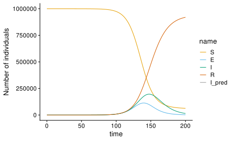
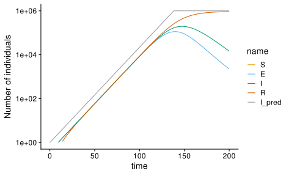

Show code
library(tidyverse)
library(fs)
library(here)
# plotting helpers
library(cowplot)
library(patchwork)
library(ggbeeswarm)
theme_set(theme_cowplot())
# Okabe Ito color scheme with amber for yellow; see https://easystats.github.io/see/reference/scale_color_okabeito.html
colors_oi <- grDevices::palette.colors()
colors_oi['yellow'] <- "#F5C710"Detection under deterministic exponential growth
I will assume a very simple model, but which can represent more complex cases so long as the outbreak has has established, and reached the asymptotic exponential growth rate in the number of infections, cumulative infections, and shedding amount, by using ‘effective parameters’. Motivation: Mathematical simplicity for developing intuition; also, I assume that detection has a negligible chance of occurring before the outbreak reaches the exponential phase.
Currently considers MGS-based detection only; future versions may add targeted detection and amplicon sequencing.
Description of the basic model:
- Deterministic exponential growth in the number of infected individuals.
- Intended to model the early stage of an outbreak where less than \(\sim 1/3\) of the population have been infected.
- The ratios of infected to infectious and to the total shedding rate assumed constant.
- Individual variation and randomness in disease time course and shedding are treated as affecting these ratios, and otherwise ignored.
- Microbiome background shedding assumed constant and independent of infection status.
- MGS results only depend on the relative abundances in the sample.
- Effect of WW transport, sample collection, and sample processing on relative abundance of pathogen to background can be represented by a constant bias parameter.
- Variability/noise in MGS read counts due to transport, sample collection, processing, and sequencing is ignored.
In this section, we will use this basic model to derive the time, current infected fraction, and cumulative incidence when \(M^*\) reads of a pathogen (or a particular k-mer in the pathogen’s genome) are first seen on a single day or cumulatively.
TODO
- above, better distinguish between motivation/justification of the model and statement of the model.
- above, better describe the purpose/message of this section
- below, review and consider which details to move to later sections or an appendix
Epidemic dynamics
Notation warning: Here, I’m taking \(I\) to be the number of infections, which includes exposed but non-yet-infectious individuals. In other words, this would be \(E + I\) in the SEIR model.
Assume deterministic exponential growth of the current number of infected, \(I(t)\), from some initial number \(I_0 = I(0)\). The number of infected at time \(t\) (measured in days) has derivative \[\begin{align} \frac{dI}{dt} &= (b - d) I = r I, \end{align}\] where \(r > 0\) is the exponential growth rate. I further assume that \(r\) can be broken into separate ‘birth’ and ‘death’ rates, \(b\) and \(d\), describing the rate at which infections beget new infections, and which infected individuals recover. Under this model, the number of infections at time \(t\) grows as \[\begin{align} I(t) &\approx I_0 e^{rt}. \end{align}\]
The cumulative number of infection-days at day \(t\) is \[\begin{align} \int_0^t I(u)\;du &= \int_0^t I_0 e^{ru}\;du \\&= \frac{I_0}{r} \left(e^{rt} - 1 \right) \\&= \frac{1}{r} \left[I(t) - I(0) \right] \\&\approx \frac{1}{r} I(t) \quad \text{for $t \gg 1/r$}. \end{align}\]
We can calculate the cumulative number of infections \(C(t)\) at day \(t\) by noting that new infections occur at rate \(b I(t)\); hence \[\begin{align} C(t) &= \int_0^t b I(u)\;du \\&= \int_0^t b I_0 e^{ru}\;du \\&= \frac{b I_0}{r} \left(e^{rt} - 1 \right) \\&= \frac{b}{r} \left[I(t) - I(0) \right] \\&\approx \frac{b}{r} I(t) \quad \text{for $t \gg 1/r$}. \end{align}\] The cumulative number of infections is \(b\) times the cumulative number of infection-days, and is approximately \(b/r\) the number of current infections. Note: Arguably, we should be adding the initial number of infected, \(I_0\), in which case we get \[\begin{align} C(t) &= \int_0^t b I(u)\;du + I_0 \\&= \frac{b}{r} \left[I(t) - I_0 \right] + I_0 \\&= \frac{b}{r} I(t) - \frac{d}{r} I_0. \\&\approx \frac{b}{r} I(t) \quad \text{for $I(t) \gg I_0$}. \end{align}\] I will typically assume \(I_0\) is a tiny fraction of all current and cumulative infections in the regimes of interest, so this distinction shouldn’t matter. The condition \(I(t) \gg I_0\) will be true for \(t \gg 1/r\).
Define cumulative incidence \(c(t)\) as the fraction of the population that have been infected by time \(t\), \[\begin{align} c(t) &= C(t) / N \\&\approx \frac{b}{r} i(t) \quad \text{for $t \gg 1/r$}. \end{align}\]
How long is the exponential approximation good for? Suppose there is lasting immunity, such that each person can only be infected once. In that case, we expect the rate of new infections per capita, \(b\), to be in proportional to \(1 - c(t)\); i.e., \(b(t) = [1 - c(t)] b_0\). The exponential approximation is good so long as \(c(t) \ll 1\). A good rule of thumb could be to take the point when \(c(t) \approx 1/e\) as the end of the exponential phase. This occurs when the currently infected fraction of the population \(i(t)\) reaches \(\tfrac{r}{b} e^{-1}\), or when \(t \approx \tfrac{1}{r} [\log (\tfrac{r}{i_0 b}) - 1]\). (Needs to be checked)
The peak of the epidemic (max value of \(I\)) will occur when \(b\) decreases to \(d\). This occurs when \(c(t) = 1 - \tfrac{d}{b_0} = \tfrac{r_0}{b_0}\). The number of susceptible (those not infected) is \(1 - c = d/b_0\), matching the standard SIR result (e.g. equation 4a here).
Shedding and sequencing
Suppose the number of infected at time \(t\) is then \[\begin{align} I(t) &\approx I_0 e^{rt}. \end{align}\] where \(I_0\) is the initial number of infected. Let \(N\) be the total population (assumed fixed) and \(i(t) = I(t) / N\) be the fraction of the population that is infected.
Assume a constant amount of background shedding in each person regardless of infection status. Suppose a background shedding rate of \(s_0\) of background microbiome in each person, regardless of infection status. Let \(s\) be the relative rate of shedding of pathogen to background in an infected person, so that \(s s_0\) is the rate of pathogen shedding in an infected person (note potential name clash with the fraction of the population that is susceptible). Let \(B\) be the relative measurement effiency of the pathogen to the background (MGS bias). In the regime I consider below, where total threat reads are a small fraction of total reads, we can use \(B\) to also account for the fact that perhaps only a small fraction of reads from the pathogen are useful for detecting it as a novel threat.
The expected fraction (i.e. proportion) of the threat in the MGS reads in a sample collected on day \(t\) is \[\begin{align} E [ P(t) ] &\approx \frac{I(t) s s_0 B}{I(t) s s_0 B + N s_0 } \\&= \frac{I(t) s B}{I(t) s B + N } \\&= \frac{i(t) s B}{i(t) s B + 1 } \\&\approx i(t) s B. \end{align}\] The first approximation comes from treating \(I(t)\) as constant over the 24h the sample is collected (more on this below). The second approximation comes from assuming that the pathogen is always a small fraction of the reads (\(i s B \ll 1\)). One way for this condition to arise is that it holds even for a sample from an infected individual or an entirely infected population (i.e., \(s B \ll 1\)). I expect that to be true for subtle pathogens, but not necessary all pathogens (e.g., gastroenteric pathogens). For these latter cases I expect \(i(t) \ll 1\) and for the broader condition \(i s B \ll 1\) to still hold.
To determine the absolute copy number or concentration of the pathogen in the sample, we’d need to say something about the overall shedding amount and water system. However, to analyze MGS detection, it is enough to consider the relative abundance as above.
The expected number of sequencing reads of the threat on day \(t\) is \[\begin{align} E [ M(t) ] = E [ P(t) ] \cdot \mathcal M \approx i(t) s B \mathcal M. \end{align}\] where \(\mathcal M\) is the total sequencing depth, which I’m treating as a value that is determined by the experimenter and is the same for each day.
More generally, if the sample is collected over a particular period of time \(\Delta t\), we might want to model the pathogen contribution to the sample as an integral of shedding over that period, \[\begin{align} E [ M(t) ] &= s B \mathcal M \int_{t-\Delta t}{t} i(u) \; du \\&= s B \mathcal M \frac{1}{r} i_0 e^{rt} \left[1 - e^{-r \Delta t} \right] \\&= s B \mathcal M \frac{1}{r} i(t) \left[1 - e^{-r \Delta t} \right]. \\&\approx i(t) (\Delta t) s B \mathcal M \quad \text{for $r \Delta t \ll 1$}. \end{align}\]
Detection
Warning: The below assumes that \(r \ll 1\), so that we can ignore the growth in \(i(t)\) over the sampling period when computing the contribution of pathogen to the sample.
Suppose there is a threshold number of reads (of the pathogen or the distinguishing subsequence), \(M^*\), we need to see in a single day to detect the threat (e.g. 5). I’ll take \(\Delta t = 1\) (24-h composite sampling) and suppose that \(r \ll 1\), so that we can ignore growth over the sampling window (otherwise, just multiply the number of expected reads by the constant factor \((1 - e^r)/r\)). As a first approximation, let’s ignore noise in shedding and sequencing measurement, and define detection as occurring when \(E [M(t^*)] = M^*\). Detection then occurs at \(i(t) s B \mathcal M = M^*\) or \[\begin{align} i(t^*) = \frac{M^*}{s B \mathcal M}. \end{align}\] In the exponential regime where \(i(t) = i_0 e^{rt}\) and cumulative incidence is \(c(t) \approx \tfrac{b}{r} i(t)\), we have that \[\begin{align} t^* = \frac{1}{r} \log \frac{M^*}{i_0 s B \mathcal M} \end{align}\] \[\begin{align} c(t^*) = \frac{b}{r} \cdot \frac{M^*}{s B \mathcal M}. \end{align}\]
Note that the detection threshold and efficiency appear together as \(M^* / B\); this means we’ll get the same answer whether we think of
- \(M^*\) is the number of reads hitting a particular identifying subsequence, and \(B\) contains a factor \(x < 1\) to account for the fact that only a fraction \(x\) of the pathogen’s reads hit the subsequence
- \(M^*\) is the number of reads hitting the pathogen, and we increase it by a factor \(1/x\) to account for the fact that only \(x\) of the reads are useful for identification; \(B\) does not contain the factor \(x\).
However, when we start to consider noise in the read counts, we need to be more careful about this.
Joint dependence of many factors: The effect of \(s\), \(B\), \(M^*\) and \(\mathcal M\) all occurs through the term \(\frac{M^*}{s B \mathcal M}\). (This should match our preexisting intuition.) Thus, for example, we can lower sequencing by 2-fold if we can enrich for the pathogen 2-fold (by, for exampling, doing a better job of removing bacterial NA for viral detection).
Effect of sequencing effort: These results explain the pattern seen in the example simulations presented by Charlie Whittaker last December, in which we saw that the time of detection decreases logarithmically \(\mathcal M\) and cumulative incidence at time of detection decreases as \(1 / \mathcal M\). As per the previous point, we see the same behavior when we vary \(s\), \(B\), or \(1/M^*\).
Cumulative reads over a given period
What if it is sufficient to see \(R^*\) reads cumulatively over the last \(T\) days? Call \(Q\) the cumulative reads over the last \(T\) days. Then \[\begin{align} E [ Q(t) ] &= s B \mathcal M \int_{t-T}{t} i(u) \; du \\&= s B \mathcal M i(t) \frac{1}{r} \left[1 - e^{-r T} \right]. \end{align}\] Setting \(T = t\) corresponds to all reads since time \(0\); in that case, we have that \(E [ Q(t) ]\) equals \(s B \mathcal M\) times the cumulative infection hours, or approximately \[\begin{align} E [ Q(t) ] &\approx s B \mathcal M \frac{i(t)}{r} \\&\approx s B \mathcal M \frac{c(t)}{b} \end{align}\] Considering the factor \(1 - e^{-rT}\) indicates that it is only the samples from the past few characteristic growth periods that contributes significantly to the total reads.
How much better do we do, detection wise, when we only require cumulative reads to reach \(M^*\)? Detection now occurs at \(E[Q(t)] = M^*\) or \[\begin{align} i(t^*) &= \frac{r M^*}{s B \mathcal M} \\ c(t^*) &= b \cdot \frac{M^*}{s B \mathcal M}; \end{align}\] these are both a factor \(r\) greater than before. As expected, the effect on time is only logarithmic, \[\begin{align} t^* = \frac{1}{r} \log \frac{r M^*}{i_0 s B \mathcal M}. \end{align}\] The effect overall is as if we increased any of \(\mathcal M\), \(s\), or \(B\) by a factor of \(1/r\).
Further discussion
MGS monitoring performance is independent of WWTP catchment size and flow rate
- WWTP catchment size and flow rate do not affect the quantities of interest at the time of detection.
- This is because, in the model, the MGS reads are determined by the relative abundance of the pathogen in the sample, which is determined by the relative abundance of pathogen in the catchment; and we were interested in the prevalence (relative abundance of infected) in the catchment at time of detection, rather than absolute infection numbers.
- Also, I assume detection occurs in a regime where stochastic effects from small infection numbers are negligible.
- This would be very useful to know if true, since it would allow us to use estimates from a variety of WWTPs or other WW monitoring locations interchangeably.
- Contrast with targeted detection, where the absolute concentration of the pathogen matters, and so total infected, flow rate, and effective concentration factor of the protocol, become relevant.
Some caveats
- For these results to hold, it is important that detection occurs in the exponential quasi-equilibrium phase. This implies that the population must be large enough and detection ability is not too high.
- I also assumed we can ignore noise from transmission and shedding; this similarly requires that there is enough absolute numbers of infections at the time of detection.
Applications
Example: SARS2 reads in Southern California WWTP data
Rothman et al. (2021) perform untargeted viral RNA sequencing of samples from several WWTPs in Southern California, with and without enrichment for specific viruses including SARS2. Jeff previously estimated that the proportion of SARS2 reads in a WWTP sample measured without enrichment is 3e-7 when the daily incidence (fraction of the population infected in a day) is 1e-3. What can we say in general about the proportion of SARS2 reads at a given prevalence in the population?
First, we need to connect the current daily incidence 1e-3 to the current prevalence. In our baseline model, the new infections per day is approximately \(b \: i(t)\), where \(b\) is the rate of new infections per infected and \(i(t)\) is the fraction of the population that is infected.
We can estimate \(b\) from the rough estimates of \(R_0\) and the (average) generation time compiled by Lenni last summer, where generation time is defined as
Generation time is a modelling term describing the time duration from the onset of infectiousness in a primary case to the onset of infectiousness in a secondary case infected by the primary case. source
In our model, in which infectiousness is constant over the course of the disease, the average generation time is \(1/d\) and \(R_0 = b/d\), so that \(b = R_0 d\). Lenni’s point estimates were \(\hat R_0 = 3\) and an average generation time of \(5.1\) days (corresponding to \(\hat d = 1/5.1 \approx 0.2\), giving a point estimate for \(b\) of \(\hat b = 3 / 5.1 \approx 0.59\). (A future improvement would consider estimates specifically for this population and time period.) At this value of \(b\), a daily incidence of \(10^{-3}\) corresponds to a prevalence of \(i(t) = 10^{-3}/\hat b \approx 1.7 \cdot 10^{-3}\).
Therefore we have \(P = 3\cdot 10^{-7}\) when \(i = 1.7 \cdot 10^{-3}\), so that \(sB = P / i = 1.8 \cdot 10^{-4} \sim 10^{-4}\). From \[\begin{align} \mathcal M = \frac{M^*}{s B i(t^*) }, \end{align}\] we can compute that we would need to sequence a single sample to a depth of \(\sim 10^{9}\) fragments to see 10 fragments of SARS2 when \(i = 10^{-4}\) of the population is infected.
What about seeing an individual 40-mer in the SARS2 genome 10 times when \(i = 10^{-4}\), for 1x150bp sequencing? In this case, roughly \(10^{-2.5}\) of SARS2 reads will cover the 40-mer (\((150 - 40 + 1) / 30000\)), so that we’d need to increase our sequencing depth by \(10^{2.5}\)-fold relative to the case of just seeing the genome 10 times, resulting in a total sequencing depth of \(10^{11.5}\) reads.
Details and complications
General assumptions
- Local outbreak — cases come in from elsewhere (or a local release), then spread locally
- Local wastewater treatment plant (WWTP)
- Assume that the WWTP is a good proxy for the local population
- Consider the exponential phase of the outbreak.
Thus we need to model
- exponential growth (possibly noisy)
- shedding (possibly noisy)
- transport — possible delay, noise
- sample collection
- measurement via qPCR, amplicon sequencing, metagenomic sequencing
Even under the simplified scenario of a local outbreak and monitoring system (closed system), there is still complication from stochasticity and complex disease time courses. To make progress we need to look for ways to approximate the dynamics that still gives an accurate picture for the purposes of detection. Goal of this section is to explain when and why we can approximate the dynamics of cumulative infections, active infections, and the amount of collected NA as growing deterministically and exponentially.
Complex disease time courses
Qualitative model:
Show code
tribble(
~name, ~x, ~xend,
'symptomatic', 8, 16,
'infectious', 5, 12,
'shedding', 3, 20
) %>%
mutate(
across(name, fct_inorder),
y = name %>% as.integer
) %>%
ggplot(aes(x = x, xend = xend, color = name, label = name)) +
theme_minimal_hgrid() +
theme(legend.position = 'none') +
scale_x_continuous(breaks = c(0, 10, 20)) +
expand_limits(x = 0, xend = 20) +
scale_y_discrete(limits = rev) +
scale_color_brewer(type = 'qual', palette = 2) +
labs(x = 'time since exposed (days)', y = NULL) +
geom_segment(aes(y = name, yend = name), size = 1)Quantitative model would be to have each of these represented by a continuous function of time. Could further have a (joint) distribution of functions.
Can tackle this by considering the impact on the exponential growth rate and the scaling factors relating exposed to infected to recovered to shedding amounts. A key interest is the relationship between cumulative exposures (i.e. infected) to currently infectious to shedding.
At large enough numbers, we should be able to approximate the effect of these complex dynamics through effective parameters linking the number of infected, number of infectious, and current rate of shedding; all will be growing asymptotically exponentially. There are various plausible models here. As a simple illustration, suppose that….
A main issue left unaddressed by the SEIR model is when shedding occurs. Also, we might not be that happy with the exponential waiting times for the disease stages. We can address these issues by considering a more complex disease time course which explicitly includes shedding. To remain tractable in the present framework, what is important is that it is still safe to assume that we quickly reach approximate exponential growth in the number of infected and that daily shedding is proportional to the number of infected in this asymptotic regime.
Questions to investigate here include
- what are the asymptotic growth rates and shedding proportionality constants?
- related: how does the disease time course affect growth rate and the proportionality constant between shedding and the number of infected?
- what is the time scale for reaching the asymptotic exponential growth regime?
SEIR model
TODO: Consider reparameterizing to the other common form of \(dS/dt = -(\beta/N) SI\), so that we can write \(R_0 = \beta / \gamma\) independent of \(N\). I’d need to adjust the code accordingly.
A typical way to consider the effect of a latent (non-infectious) period is using the SEIR model. Define the SEIR model as \[\begin{align} \frac{dS}{dt} &= -\beta S I \\ \frac{dE}{dt} &= \beta S I - \theta E \\ \frac{dI}{dt} &= \theta E - \gamma I \\ \frac{dR}{dt} &= \gamma I \end{align}\] where \(S\) is the number of susceptible, \(E\) is the number of exposed, \(I\) is the number of infected, and \(R\) is the number of recovered; \(\beta\) is the transmission rate, \(\theta\) is the incubation rate, and \(\gamma\) is the recovery rate. (This parameterization is from Diekmann, Heesterbeek, and Britton (2012).)
I expect that we’ll typically be able to use a quasi-equilibrium approximation where \(E\) and \(I\) each grow exponentially. Let’s work out that situation.
Early in the pandemic, we can take \(S \approx 1\) and \(R \approx 0\), giving the approximate system \[\begin{align} \frac{dE}{dt} &= - \theta E + B I \\ \frac{dI}{dt} &= \theta E - \gamma I, \end{align}\] (where \(B = \beta N\)) which converges to exponential growth at rate given by \[\begin{align} r = \frac{-(\theta + \gamma) + \sqrt{(\theta - \gamma)^2 + 4 \theta B}}{2}. \end{align}\] (given by the leading eigenvector \(\lambda_1\) of the Jacobian matrix) (see Ma (2020)). We can solve for the equilibrium ratio of exposed to infected, \(E/I\), by solving for \(d/dt(E/I) = 0\); this gives \[\begin{align} \frac{E}{I} &= \frac{-(\theta - \gamma) + \sqrt{(\theta - \gamma)^2 + 4 \theta B}}{2 \theta} \\&= \frac{r + \gamma}{\theta}. \end{align}\] (Alternatively, we could get the equilibrium ratio from the leading eigenvector of the Jacobian; see below).
For \(\theta (B - \gamma) \ll (\theta + \gamma)^2\), we can approximate \(r\) as \[\begin{align} r \approx \frac{\theta (\theta - \gamma)}{\theta + \gamma}, \end{align}\] which is consistent with the results of Heng and Althaus (2020). Heng and Althaus (2020) focus on an approximation in which the SEIR model’s dynamics are approximately the same as the corresponding SIR model, but scaled by a factor of \(\alpha = \theta / (\theta + \gamma)\).
More explicitly, the eigenvalues are (Wolfram Alpha) \[\begin{align} \lambda_1 &= \frac{-(\theta + \gamma) + \sqrt{(\theta - \gamma)^2 + 4 \theta B}}{2} \\ \lambda_2 &= \frac{-(\theta + \gamma) - \sqrt{(\theta - \gamma)^2 + 4 \theta B}}{2}. \end{align}\] The eigenvectors are \[\begin{align} v_1 &= \left(\frac{-(\theta - \gamma) + \sqrt{(\theta - \gamma)^2 + 4 \theta B}}{2\theta}, 1 \right) \\ v_2 &= \left(\frac{-(\theta - \gamma) - \sqrt{(\theta - \gamma)^2 + 4 \theta B}}{2\theta}, 1 \right). \end{align}\] I believe the (exponential) rate of convergence to the exponential quasi-equilibrium is given by the difference \(\lambda_1 - \lambda_2\), \[\begin{align} \lambda_1 - \lambda_2 = \sqrt{(\theta - \gamma)^2 + 4 \theta B}. \end{align}\]
Show code
# modified from http://epirecip.es/epicookbook/chapters/seir/r_desolve
# Function to return derivatives of SEIR model
seir_ode <- function(t,Y,par){
S <- Y[1]
E <- Y[2]
I <- Y[3]
R <- Y[4]
beta <- par[1]
theta <- par[2]
gamma <- par[3]
dYdt <- vector(length=3)
dYdt[1] <- -beta*I*S
dYdt[2] <- beta*I*S - theta*E
dYdt[3] <- theta*E - gamma*I
return(list(dYdt))
}
# Set parameter values
theta <- 1/5
gamma <- 1/10
# Set beta from the basic reproduction number, since R0 = beta * N / gamma
R0 <- 3
N <- 1e6
beta <- R0 * gamma / N
# Set initial conditions
E0 <- 1
I0 <- 0
init <- c(N - E0 - I0, E0, I0)
t <- seq(0, 250)
par <- c(beta, theta, gamma)
# Solve system using lsoda
sol <- deSolve::lsoda(init, t, seir_ode, par) %>%
as_tibble %>%
set_names(c("time", "S","E","I")) %>%
mutate(R = N - (S + E + I))
r_pred = (-(theta + gamma) + sqrt((theta - gamma)^2 + 4 * theta * beta * N)) / 2
x <- sol %>%
mutate(
across(everything(), as.numeric),
I_pred = pmin(exp(r_pred * time), N),
) %>%
pivot_longer(-time) %>%
mutate(across(name, fct_inorder))
clrs <- c(
S = colors_oi[['orange']],
E = colors_oi[['skyblue']],
I = colors_oi[['bluishgreen']],
R = colors_oi[['vermillion']],
I_pred = colors_oi[['gray']]
)Show code

Show code

Note, I haven’t calculated the constant for the asymptotic number of infected. But we can see that we have the correct asymptotic growth rate.
Let’s also check our prediction for the asymptotic ratio of \(E/I\) in the exponential regime,
Show code
ratio_pred <- (-(theta - gamma) + sqrt((theta - gamma)^2 + 4 * theta * beta * N))/(2 * theta)
x %>%
pivot_wider(time) %>%
ggplot(aes(time, E / I)) +
scale_y_log10() +
geom_hline(yintercept = ratio_pred, color = 'grey',
size = 0.8, linetype = 2) +
geom_line() +
labs(y = "E / I")
The simulation starts with 1 exposed individual; hence, the ratio of exposed to infected starts high but quickly drops to the quasi-equilibrium ratio of 1, then eventually starts to decline as the susceptible population declines and causes a drop in the rate of new infections, before appearing to asymptote at a positive value in the waning days of the epidemic.
Possible additions
- Expression for the peak susceptible, and total infected
Show code
# from https://cran.r-project.org/web/packages/odin/vignettes/discrete.html
library(odin)
## Core equations for transitions between compartments:
update(S) <- S - beta * S * I / N
update(E) <- S - beta * S * I / N
update(I) <- I + beta * S * I / N - gamma * I
update(R) <- R + gamma * I
## Total population size (odin will recompute this at each timestep:
## automatically)
# N <- S + I + R
N <- 1
## Initial states:
initial(S) <- S_ini # will be user-defined
initial(E) <- E_ini # will be user-defined
initial(I) <- I_ini # will be user-defined
initial(R) <- 0
## User defined parameters - default in parentheses:
S_ini <- user(1 - 1e-4)
E_ini <- user(0)
I_ini <- user(1e-4)
beta <- user(0.2)
theta <- user(0.1)
gamma <- user(0.1)(Random) variation in transmission
One important form of randomness is in the number of secondary infections caused by a single infection. Discrete generation models make it particularly simple to model inter-individual variation in this number. The Gamma-Poisson (GP) distributrion (i.e., Negative Binomial) is a convenient (and seemingly common) distributrion to use for this. A possible justification of a Poisson mixture distribution like this is to suppose that each individual varies in how infectious they are, but conditional on their infectiousness they infect a random number of others according to the standard Poisson assumption. Choosing a Gamma distribution for the first step is convenient because it gives us just one parameter to tune the CV in the infectiousness among individuals. See below for more about the GP distribution and the parameterization in terms of the mean and CV of the underlying gamma distribution.
Very small CVs for the underlying gamma distribution amount to little variation in infectiousness. A CV of 1 in the Gamma distribution corresponds to an exponential; higher CVs will be even fatter tailed. In these cases, there will tend to be ‘super spreader’ infections with much higher infectiousness than the typical infection.
We can see the effect of stochasticity with tunable variation in infectiousness by simulating a discrete generation branching process with a GP offspring distribution. Suppose there are \(I\) infectious individuals, and each infects an iid GP number of others, with parameters \(\mu\) and \(\kappa\). (The mean \(\mu\) is also the \(R_0\) of the disease.) To simulate, we can exploit the fact that the sum of \(n\) iid GP random variables with mean \(\mu\) and CV of the gamma distributrion \(\kappa\) is a GP random variable with mean \(n \mu\) and gamma CV of \(\kappa / \sqrt{n}\). (Note, this is somewhat a guess based on the fact that for the sum of iid Gamma rvs, the scale parameter remains the same; and the sum of Poissons is Poisson with appropriately increased mean, so we can think of summing up all the gamma’s first, then feeding into a single Poisson.)
Show code
next_generation <- function(I0, mean, cv) {
n <- length(I0)
mean_sum <- I0 * mean
cv_sum <- cv / sqrt(I0)
scale_sum = cv_sum^2 * mean_sum
shape_sum = cv_sum^(-2)
rgamma(n = n, scale = scale_sum, shape = shape_sum) %>%
{rpois(n = n, lambda = .)}
}
# Simulate many runs over many generations
set.seed(42)
num_runs <- 100
num_gens <- 20
mat <- matrix(0, nrow = num_gens, ncol = num_runs)
mat[1,] <- 1
for (i in seq(2, nrow(mat))) {
mat[i, ] <- next_generation(mat[i-1, ], mean = 2, cv = 0.3)
}
sims <- mat %>% as_tibble %>%
mutate(time = row_number() - 1) %>%
pivot_longer(-time, names_to = '.id') %>%
mutate(
across(.id, str_sub, 2),
across(.id, as.numeric)
)
rm(mat)Show code
sims %>%
filter(.id <= 20, time <= 15) %>%
ggplot(aes(time, value, color = as.factor(.id))) +
theme(legend.position = 'none') +
labs(x = 'Time (generations)', y = 'Infections') +
scale_y_log10(breaks = c(1, 10, 1e2, 1e3, 1e4)) +
geom_line(aes(y = exp(log(2) * time)), color = 'black', linetype = 4) +
geom_line()In the simulations above (R0 of 2, CV of 0.3), we see that for at or below ~10 infections, stochasticity is important; but for much above, we have approximately deterministic exponential growth.
In a superspreader scenario (R0 of 2, CV of 2),
Show code
# Simulate many runs over many generations
set.seed(42)
num_runs <- 100
num_gens <- 20
mat <- matrix(0, nrow = num_gens, ncol = num_runs)
mat[1,] <- 1
for (i in seq(2, nrow(mat))) {
mat[i, ] <- next_generation(mat[i-1, ], mean = 2, cv = 2)
}
sims <- mat %>% as_tibble %>%
mutate(time = row_number() - 1) %>%
pivot_longer(-time, names_to = '.id') %>%
mutate(
across(.id, str_sub, 2),
across(.id, as.numeric)
)
rm(mat)Show code
sims %>%
filter(.id <= 20, time <= 15) %>%
ggplot(aes(time, value, color = as.factor(.id))) +
theme(legend.position = 'none') +
labs(x = 'Time (generations)', y = 'Infections') +
scale_y_log10(breaks = c(1, 10, 1e2, 1e3, 1e4)) +
geom_line(aes(y = exp(log(2) * time)), color = 'black', linetype = 4) +
geom_line()
we see that stochasticity remains relevant for larger sizes of 100 to 300 infections. We can also more strongly see another expected effect of randomness, which is that conditional on survival, the outbreak grows faster than the asymptotic rate initially. Notably, however, in both cases the asymptotic exponential growth rate is the same (\(\log R_0\)).
Remaining questions/todos include
- Establishment size above which an outbreak is approximately guaranteed and can ignore stochastic effects; what is this size for real epidemics?
- I’m used to models where the point at which success is assured and which can ignore stochastic effects are the same; is that also true with very skewed offspring/infection distributions?
- Expression for the CV of \(I(t)\)
Relevant references
Morán-Tovar et al. (2022) section 2.2 discusses stochasticity in transmission, but without variation in infectiousness among individuals. The model there is equivalent to what Charlie, Dan, and Jake have been using. Morán-Tovar et al. (2022) section 2.3 uses a contact network model to consider heterogeneity in individuals. Super-spreaders emerge from highly-connected nodes.
Origination of the outbreak
Suppose new infections coming in at rate \(M\). Can understand the point at which we have a deterministic local outbreak and can ignore new imports, based on what we know about this from evolutionary theory.
Shedding
Simple model used in the modeling literature links cases with shedding by supposing that there is a fixed distribution of shedding as a function of time post symptom onset. The idea that everyone sheds the same can be misleading; and is particularly sketchy in cases where there is substantial heterogeneity in how people respond to the disease. Still, it is a fair starting point and useful for illustration.
In our case, we’re interested in shedding that occurs even without clinical presentation, so I’ll consider that there is a shedding distribution \(s(t)\) indicating the amount of shedding from a person \(t\) days after infection (exposure). If the number of exposures is \(E(t)\), then the total shedding \(S(t)\) at time \(t\) is given by the convolution of \(E\) with \(s\), \[\begin{align} S(t) = \int_{-\infty}^{\infty} E(u) \; s(t - u) \; du. \end{align}\] Suppose the number of exposed grows exponentially at rate \(r\), \(E(t) = E_0 e^{rt}\). We know that \(s(t) = 0\) for \(t \le 0\), and we further expect \(s\) to initially increase, peak at some time \(t^*\), and then decay to 0. Let’s take it to be Gamma distributed with a mean of 10 days and a CV of 0.5,
Show code
shedding <- tibble(mean = 10, cv = 0.5) %>%
mutate(
sd = cv * mean,
var = sd^2,
scale = var / mean,
shape = mean / scale
) %>%
crossing(t = seq(0, 30, by = 0.1)) %>%
mutate(
density = dgamma(x = t, shape = shape, scale = scale)
)
shedding %>%
ggplot(aes(t, density)) +
labs(x = 'Time (days) after exposure', y = 'Density of shedding') +
geom_line()Here, total area under the curve is 1, so we can think of the units as in terms of the total shedding over a single infection.
Now let’s view the total shedding rate over time, starting from a single exposed and under a growth rate of \(r = 0.1\),
\[\begin{align} S(t) = \int_{0}^{t} e^{r u} \; s(t - u) \; du. \end{align}\]
Show code
x %>%
pivot_longer(-t) %>%
ggplot(aes(t, value, color = name)) +
scale_y_log10(limits = c(1e-2, NA)) +
geom_line()After an initial lag, the shedding rate too grows exponentially, as expected.
We can attempt a rough calculation of the ratio ratio \(S/E\):
- The total shedding amount over an infection is 1
- The bulk of the shedding of the infected is roughly between days 5 and 15;
- So \(S(t)\) is roughly the sum of contributions from those infected over 5-15 days in the past, and each of them are contributing 1/10. (The mean \(\pm\) the standard deviation)
- 5-15 days in the past is (in this case) a period of \(-1/2r\) to \(-3/2r\); the integral of \(e^{rt}\) over that period is \(1/(10 r) e^{rt} (e^{-1/2} - e^{-3/2})\)
- This suggests a ratio of \((e^{-1/2} - e^{-3/2})/(10 r)\) or 0.38.
We also expect there to be substantial variance in shedding among and within individuals; what effect does this have on total shedding over the course of a day? The distinction between variance within versus between individuals is not fully defined outside the context of a specific model, but roughly I mean the following. By variance among individuals, I mean the fact that individuals may respond differently to the pathogen in a manner that causes some to shed much more than others, or to have a significantly different time course. By variance within individuals, I mean that how much any one person sheds on a given day (or exactly when within the day) might show additional variation beyond what can be explained from these broader differences.
Roughly speaking, we expect the variance in shedding to be negligible when the number of individuals who contribute to a sample is large enough. How large is enough?
It is reasonable to suppose that each infected person sheds independentally, and therefore the CV in the total amount shed on a given day scales as \(1/\sqrt{n}\), where \(n\) is the number of infected shedders. However, each infected shedder does not contribute equally to shedding — any ‘super shedders’ or people who are in the peak shedding period will contribute (on average) much more than others. For a given assumption about the shedding timecourse and how it varies among infected individuals, there will be some effective number of shedders, \(n_e\), which will be less than the total number of shedders \(n\), that captures how the \(CV\) decreases. At quasi-equilibrium, there will be a fixed distribution of shedders and \(n_e \propto n\).
What we ultimately care about is the shedding contributing to an individual WWTP sample. A 24h composite sample will integrate over shedding from more than the past 24h, which will tend to buffer the day to day variation and thus increase the corresponding \(n_e\) to some degree. Our current guess is that most shedding will be arrive at the sampling site within 24h, in which case this effect will be small.
We can get a sense of the effective number of shedders contributing to a WWTP sample from studies that have attempted to link SARS2 or influenza WWTP levels to local prevalence, divided by the mean daily shedding rate observed in studies that assess fecal shedding in individuals.
Transport
It takes time for the waste to travel to the WWTP, (I think) typically on the order of hours to days. This time depends on the location and its distance from the WWTP, along with other factors such as the typical flow rates in the various pipes and effects on the flow such as usage and rain. At a most basic level, the effect of transport is to create a lag between shedding and MGS signal and therefore to delay when an outbreak is detected by a corresponding amount. But perhaps more important is what happens to the waste during this time. I address both in turn.
Effect of transport time
It takes time for the waste to travel to the WWTP. How does this affect the pathogen relative abundance at the point of sampling?
Complications include * Shedding will be taking place all over the city, at different times, randomly. * The signal from a given shedding event may spread out over days. * But in the quasi-exponential regime, I guess that we can capture these complications by an effective recovery parameter. * Rain and/or other large perturbations to the WW system. Can we capture this with an effective noise (CV) parameter?
As a way to get intuition, suppose that the amount being shed into the WW system at time \(t\) is given by \(S(t)\) and that the fraction of NA collected in the sample a time \(t\) after it is shed is given by \(w(t)\). The amount of NA collected at time \(t\), \(W(t)\), is given by the convolution of \(S\) and \(w\), \[\begin{align} W(t) = \int_{-\infty}^{\infty} S(u) \; w(t - u) \; du. \end{align}\] Our main interest is in \(W(t)\) when the shedding amount grows exponentially at rate \(r\), \(S(t) = S_0 e^{rt}\). We know that \(w(t) = 0\) for \(t \le 0\), and we further expect \(w\) to initially increase, peak at some time \(t^*\), and then decay to 0. For WWTPs, I expect the peak to be on the order of a day or less (\(t^* \lesssim 1\)), and the timescale of the decay to be on the order of days, e.g. the half life around 0.5 to 3 days, but I haven’t looked into this carefully and this intuition is mostly based on the Helsinki study.
Intuition for shape of \(w(t)\):
- Could try modeling as flow with turbulent diffusion -> model concentration with Brownian motion with a constant ‘drift’ term representing the average flow rate. Should be fairly easy to simulate and understand the timescale and tail shape with formal solution or heuristics for this approximation.
- Complication is that the transit length will vary by shedding location, and that the flow rate will vary by shedding location as well as along the transport path. The diffusion rate would also vary.
- May be a long tail of arrival due to low-turnover reservoirs in the system where things might hang out; however, I don’t expect these to be very important contributors in an exponential growth scenario.
- Perturbances such as a rain storm may also be important.
It still seems useful to consider the simple model where there is a given transit length \(l\). Brownian motion at rate \(\sigma\) with drift at rate \(v\), where the transit length is \(l\), gives1 that the concentration at time \(t\) is normally distributed with mean \(vt\) and standard deviation \(\sigma \sqrt{t}\). The concentration at the sampling point (location \(l\) from the shedding location) is \[\begin{align} w_l(t) = \frac{1}{\sqrt{2 \pi \sigma^2 t}} \exp \left[\frac{(l - v t)^2}{2\sigma^2 t} \right]. \end{align}\] The concentration peak occurs at \(t^* = l / v\).
TODO: Determine the decay behavior
Show code
v = 1
l = 1
sigma = 0.2
t_star = l/v
sigma_star = sigma * sqrt(t_star)
tibble(
t = seq(0, 2, by = 0.01)
) %>%
mutate(
w = dnorm(l, mean = v * t, sd = sigma * sqrt(t))
) %>%
ggplot(aes(t, w)) +
geom_line() +
geom_vline(xintercept = t_star, color ='grey') +
annotate(geom = 'segment', color = 'grey',
x = t_star - sigma_star,
xend = t_star + sigma_star,
y = 1, yend = 1)Note that the distribution is skewed, with more weight on the right side of the peak.
Let’s now combine this with the shedding function \(S(t)\) to consider the total amount of NA collected at \(t\),
\[\begin{align} W(t) &= \int_{-\infty}^{\infty} S(u) \; w(t - u) \; du \\ &= \int_{-\infty}^{\infty} S_0 \frac{1}{\sqrt{2 \pi \sigma^2 (t-u)}} \exp \left[ru + \frac{(l - v (t-u))^2}{2\sigma^2 (t-u)}\right] \; du \end{align}\]
My guess is we can do an ok job of understanding the behavior with a heuristic approximation, where we consider the lag time \(t^* = l/v\) and the spread at this time approximated by the standard deviation \(\sigma \sqrt{t^*}\).
My current very rough guess is that typically, most of the shed material passes through the WWTP influent within 24h, and that the vast majority (i.e., \(\ge 90\%\)) passes through the WWTP within 4 days. This guess is based on
- I recall the Helsinki poliovirus deposition experiment saw a peak within 1-2 days
- Studies that attempt to link WWTP qPCR levels of SARS2 or flu to community infections so far seem to have largely ignored the WWTP transit time, focusing instead on the delay caused by the timecourse of shedding
- Soller et al. (2022) fit a lognormal distribution to the times reported by Kapo et al. (2017), finding a lognormal distribution in hours with parameters (1.2, 0.85), which are the mean and variance of the underlying normal distribution and have units of natural-log hours. This corresponds to a geometric mean of 3.3h and a geometric sd of 2.3h.
- An on-the-fly calculation done by Lenni using this site to estimate it would take ~4h for WW to flow from Kendall Square to Deer Island WWTP
Soller et al. (2022) notes that, for samples of settled solids, the time the pathogen spends in the WWTP before sample collection may be larger than the time spent traveling to the WWTP.
2023-03-31: I’ve updated towards transit times being significantly longer than what is suggested above for our local WWTP, around 12h for Cambridge and up to ~3 days for the farthest locations (Framingham).
Changes in waste composition during transport
During transport, there will be live biological and chemical activity, which can affect the composition of the sample collected and in particular the relative abundance of the pathogen. The relative abundance of the pathogen NA (the proportion of pathogen NA among total NA) will change due to
- Growth of the pathogen is possible but does not seem relevant for most pathogens, which I expect to only replicate in human cells, but could be true for some pathogens that can replicate in the GI tract or the environment
- Degredation or decay of the pathogen, either due to chemical reactions, physical forces, or biological factors (viruses and their NA may be destroyed or consumed by microbes; microbes may be killed by viruses or other microbes).
- Growth and other biological activity of the background and sewage microbiome. This will tend to decrease the relative abundance of the pathogen.
- Degredation or decay of the background. This too could be substantial and would serve to increase the relative abundances of the pathogen.
Growth and metabolism of members of the microbiome that are more adapted to the sewer environment may may substantially lower the relative abundance of the pathogen (and thus its MGS reads) via purely compositional effects (increase in background abudance lowers pathogen relative abundance) and via increasing the decay of the pathogen through destruction/consumption.
There may also be a resident sewer microbiome, which could be contributing an additional amount of non-pathogen NA and adding to the decay of the pathogen.
Note, the pathogen and background will be changing physical form and it isn’t obvious how that will affect the resulting MGS data. E.g. a virus can be killed or inactivated but still yield NA.
The period in the primary clarifier may also be important for solids samples, depending on how long that time is and how more/less hospitable that setting is.
We can write out the relevant math. The contribution of the native sewage microbiome can be modeled by a fixed additional contribution, which will have different MGS bias. The differences in growth and decay can be modeled to first approximation with organism-dependent bias factors that scale with transport time, though this approximation might have important limitations.
We can try lit review to consider how we can expect various organisms to behave during transport. I expect that the math will tell us that it is the pathogen’s growth/decay, and the most abundant (weighted in terms of \(sB\)) of the background organisms that most matter here.
Sample collection
Consider implications of different sample types, particularly influent versus settled solids.
Partitioning into solid and liquid fractions
How the virus and the background partition into the solid versus liquid fraction will influence the relative bias parameter \(B\). Further, if the partitioning is non-linear, then it will effectively make \(B\) no longer a constant.
Kim et al. (2022) fit a version of the Freundlich isotherm model,
\[\begin{align} C_s = K_f C_l^{1/n}, \end{align}\]
where
- \(C_s\) is the concentration in the solid fraction (copies per g)
- \(C_l\) is the concentration in the liquid fraction (copies per mL)
- \(K_f\) is a coefficient (ml per g)
- \(n\) is a coefficient (unitless) that determines the exponent \(1/n\) and hence linearity of the relationship between \(C_s\) and \(C_l\)
They fit this model using measured concentration in influent for \(C_l\) and the measured concentration in settled solids for \(C_s\), using linear regression of \(\log C_s\) against \(\log C_l\). They do so separately for 5 treatment plants, finding results consistent with \(n \in [2,3]\) and \(K_f \in [10^3, 10^5]\) mL g\(^{-1}\). Notably, the fact that \(\hat n \ge 2\) suggests that the relationship between \(C_s\) and \(C_l\) is not linear; instead, \(C_s\) increases more slowly than \(C_l\). Note: When I examined the data by eye, I observed a poor fit which suggests we shouldn’t take these results too literally.
It is hard to say what this implies about MGS measurements without also knowing how the concentration of the background behaves. This study also performs measurments of PMMoV; it and related Tobamaviruses are important members of the background for RNA-based protocols. However, non-enveloped viruses as well as bacteria are important background members which we might expect to behave quite differently.
Future studies that use metagenomics of paired influent and solids samples can consider how the \(K_f\) and \(n\) parameters vary across different types of organisms.
Detection methods
Metagenomic sequencing
A few features of metagenomic sequencing to be aware of
- To first approximation under standard MGS protocols, the number of reads of the pathogen depends on how deeply we sequence overall and on the relative abundance of the pathogen NA in the sample, not the absolute amount or concentration of pathogen NA.
- MGS measurements are taxonomically biased; there can also be bias within a genome
- MGS measurements are noisy and come as discrete counts.
The noise (or variability) associated with the random counting process associated with sequencing is typically modeled as Poisson or multinomial. Which isn’t very important, as the multinomial is what you get if you suppose that there are a bunch of different species or other taxonomic features, all of which are independent Poisson counts, and you’ve conditioned on the sum (total count).
For the purposes of this document, I only consider the reads mapping to a single pathogen or subsequence and so ignore the multivariate nature of the MGS measurement.
The Poisson model only captures a part of the variance associated with the MGS measurement. It is helpful (and more accurate) to think of the read count of the pathogen as coming from a two step process. Starting from a WW sample, we process the sample to generate a sequencing library. Then, we sequence the sample, giving a Poisson-distributed number of reads. Each step entails some bias; the first step also adds noise beyond the Poisson noise. If we model the bias in the Poisson step as a binomial filter, the result remains Poisson and is equivalent to multiplying the mean (\(\lambda\)) parameter of the Poisson distribution by a bias factor.
A convenient and perhaps natural choice (explained below) is to model the first step by a Gamma distribution, and the second step as a Poisson distribution with mean (\(\lambda\)) parameter equal to the Gamma rv. In this context, it is natural to parameterize the Gamma distribution by its mean mean \(\mu\) and coefficient of variation \(\kappa\). (The more common shape and scale parameters are shape of \(1/\kappa^2\) and scale of \(\mu \kappa^2\).) This parameterization allows us to separately consider bias (or effect on the expected count) through \(\mu\) and the added noise from sample processing through \(\kappa\). We can plot the density function of the Gamma distribution for a fixed mean and different CVs ranging from above and below 1,
Show code
mu <- 1
gamma_dists <- tibble(mean = mu, cv = c(0.1, 0.3, 1, 3)) %>%
mutate(
# convert from mean and cv to shape and scale params
# sd = cv * mean,
# var = sd^2,
# scale = var / mean,
# shape = mean / scale
scale = cv^2 * mean,
shape = 1 / cv^2
) %>%
crossing(x = seq(0, 3 * mu, by = 0.02 * mu)) %>%
mutate(
density = dgamma(x = x, shape = shape, scale = scale)
)
clrs <- RColorBrewer::brewer.pal(name="Greens", n=5)[2:5]
gamma_dists %>%
mutate(across(cv, as.factor)) %>%
ggplot(aes(x / mu, density, color = cv, linetype = cv)) +
theme(
axis.text.y = element_blank(),
axis.ticks.y = element_blank()
) +
scale_color_manual(values = clrs) +
# scale_color_brewer(type = 'seq', palette = 5,
# values = ~scales::rescale(.x, to = c(0, 0.5))) +
labs(x = 'x / E[x]') +
geom_line(size = 0.8)This plot was generated with a mean of 1; however, the shape of the distribution does not depend on the mean, only the CV (which determines the ‘shape’ parameter under the traditional parameterization). A CV of 1 corresponds to an exponential distribution, which has it’s mode at 0. Higher CVs corresponds to distributions that are even more sharply peaked at 0. As the CV decreases, the distribution becomes like a normal distribution with a shrinking standard deviation. Changing the mean without changing the CV rescales the entire distribution, keeping the same overall shape.
The CV of 1 looks quite different in form, and a CV of 3 is already quite extreme. For CVs of 3 or more, we begin to have large consequences for probability of detection (see below). It will be helpful to find upper bounds on the CV to ensure we can ignore complications that arise when the CV is similar or larger than 1.
The read count \(M\) then has a Gamma-Poisson (GP) distribution, also known as a Negative Binomial distribution. The mean \(E[M]\) under the GP model is the same as that of the underlying Gamma distribution, \(\mu\). The CV of \(M\) is \[\begin{align} \text{CV}[M] &= \sqrt{\frac{1}{\mu} + \kappa^2} \\&= \begin{cases} \frac{1}{\sqrt{\mu}} & \text{for $\mu \ll \kappa$} \\ \kappa & \text{for $\mu \gg \kappa$}. \end{cases} \end{align}\] The CV is approximately the larger of \(\kappa\), the CV of the Gamma distribution, and \(1/\sqrt{mu}\), which is the CV of a Poisson variable with mean \(\mu\).
Next
- Add in bias and sequencing depth
- Explain how bias in sample prep and after can both be captured by the \(B\) parameter
- Perhaps down below, consider the effect of noise on detection i.e. the probability of seeing a certain number of reads
- Covering a target
- In future version, perhaps put GP definition and features in an Appendix
Probability of seeing zero reads as a function of the mean or CV parameter. Can look at using the negative binomial distribution in R; set the ‘mu’ parameter equal to the mean of the gamma rv, and the ‘size’ parameter equal to the shape (or \(1/\kappa^2\)) of the gamma rv.
Show code
nb_prob <- crossing(mean = 10^seq(-2, 3, by = 0.02), cv = c(0.01, 0.1, 1, 3, 10)) %>%
mutate(
# Standard gamma params
scale = cv^2 * mean,
shape = 1 / cv^2,
# neg binom params
mu = mean,
size = shape
) %>%
mutate(
prob_0 = dnbinom(x = 0, mu = mean, size = shape),
prob_ge_1 = pnbinom(q = 0, mu = mean, size = shape, lower.tail = FALSE),
prob_ge_10 = pnbinom(q = 9, mu = mean, size = shape, lower.tail = FALSE),
)Show code
clrs <- RColorBrewer::brewer.pal(name="Greens", n=5)[2:5]
nb_prob %>%
filter(cv < 10, mean <= 1e2) %>%
mutate(across(cv, as.factor)) %>%
ggplot(aes(mean, prob_0, color = cv, linetype = cv)) +
scale_x_log10() +
# scale_y_log10(limits = c(1e-10, 1)) +
theme(
# axis.text.y = element_blank(),
# axis.ticks.y = element_blank()
) +
scale_color_manual(values = clrs) +
# scale_color_brewer(type = 'seq', palette = 5,
# values = ~scales::rescale(.x, to = c(0, 0.5))) +
labs(y = 'Pr(X = 0)') +
geom_line(size = 0.8)Show code
clrs <- RColorBrewer::brewer.pal(name="Greens", n=5)[2:5]
nb_prob %>%
filter(cv < 10, mean <= 1e2) %>%
mutate(across(cv, as.factor)) %>%
ggplot(aes(mean, prob_ge_1, color = cv, linetype = cv)) +
scale_x_log10() +
scale_y_log10() +
theme(
# axis.text.y = element_blank(),
# axis.ticks.y = element_blank()
) +
scale_color_manual(values = clrs) +
# scale_color_brewer(type = 'seq', palette = 5,
# values = ~scales::rescale(.x, to = c(0, 0.5))) +
labs(y = 'Pr(X >= 1)') +
geom_hline(yintercept = 0.5, color = 'grey') +
geom_line(size = 0.8)See that, for probability of 0 reads, a CV of 0.1 or less is indistinguishable from Poisson, but a CV on the order of 1 or more has a significant effect. The point where detection becomes more likely than not (grey line) is similar for CV <= 1, but becomes much larger for CV = 3 (about 100-fold larger). These plots also show that there is a monotonic relationship of CV with probability of detection via a single read, where a larger CV lowers the probabability for every mean.
Next, consider the probability of detection in 10 or more reads,
Show code
clrs <- RColorBrewer::brewer.pal(name="Greens", n=5)[2:5]
nb_prob %>%
filter(cv < 10, mean >= 1e-1) %>%
mutate(across(cv, as.factor)) %>%
ggplot(aes(mean, prob_ge_10, color = cv, linetype = cv)) +
scale_x_log10() +
scale_y_log10(limits = c(1e-4, 1)) +
theme(
# axis.text.y = element_blank(),
# axis.ticks.y = element_blank()
) +
scale_color_manual(values = clrs) +
# scale_color_brewer(type = 'seq', palette = 5,
# values = ~scales::rescale(.x, to = c(0, 0.5))) +
labs(y = 'Pr(X >= 10)') +
geom_hline(yintercept = 0.5, color = 'grey') +
geom_line(size = 0.8)Here, the relationship of detection probability vs CV is more complicated, and depends on the mean. At low means, where detection is extremely unlikely, then the larger CV helps by making these unlikely tail events more probable. Fairly unprobably events, on the order of say 1e-2 or 1e-3, may still be observed when we are testing hundreds or thousands of samples. Regarding when detection becomes more likely than not (grey line), we see something similar to single-read detection. There is only a small increase for CV of 1 relative to Poisson, and a roughly 100-fold increase for CV of 3.
It should be easy to use the probability mass function of the neg binomial to examine how the mean and cv affect the probability of seeing 0 reads.
Reads fully covering a target (sub-)sequence
In some cases, we might be interested in how many reads that fully cover a particular subsequence, such as a particular 40-mer in the pathogen’s genome.
Supose we have
- \(\mathcal M\) total single-end reads, each of length \(l\)
- A fraction \(P\) are from the pathogen’s genome, or \(M = \mathcal M P\) reads
- The pathogen’s genome has length \(G\) bp
- We are interested in the number or fraction of reads that cover a particular k-mer (of lenth \(k\), with \(k \le l\)).
Reads that cover the k-mer are those whose start coincides with that of the k-mer or the \(l - k\) bp before it. Therefore, in the absence of within-genome bias in the read start, the fraction of pathogen reads that cover the focal k-mer is \((l - k + 1) / G\). The expected number of reads covering a k-mer is (at least approximately) \[\begin{align} \mathcal M \cdot P \cdot \frac{l - k + 1}{G} \end{align}\] Note, \(P\) is itself expected to be proportional to the pathogen’s genome, so genome size is not expected to have an effect on the number of times we see a particular k-mer.
This equation tells us something about the type of sequencing we should prefer depending on the circumstances. Suppose we are in a situation where reads that are at least 50bp long are sufficient to assign to the pathogen, and we just need to see the pathogen 10 times period to identify it. In that case, we should prefer sequencing a sequencing option that maximizes the total number of reads, provided the reads are 50bp or longer. (This observation explains why you sometimes read/here that it is better to go with shorter-read options for certain ‘counting’ applications, such as gene expression studies)
But if we want to see a particular k-mer, then we want to maximize \(\mathcal M (l - k + 1)\). For \(l \gg k\), this looks like \(\mathcal M l\), or the total number of sequenced basepairs; at the values of \(l\) we are often considering with Illumina sequencing, there is also an additional premium beyond this on having longer reads, due to the need to completely cover the k-mer.
For Illumina sequencing, the sequencing options that maximize total bp also tend to maximize total read length. There are options that give more reads, but shorter reads with total bp. These options may make sense for certain applications, but I suspect we’ll often want longer reads as long as this maximizes total bp, as long as we can generate sequencing libraries with sufficiently long inserts.
I believe this same basic tradeoff/choice behavior also occurs with Ultima Genomics’ sequencing platform. With Ultima’s platform, you decide how many cycles (bp) to sequence. Running for less cycles gets you shorter reads, but is cheaper per read, though not per bp.
I have less of a handle on how this works with ONT, though I wouldn’t be surprised if a similar trade also exists there.
TODO: find my notes from Metasub on this topic
Targeted detection using qPCR or dPCR
In future, I’ll add notes on qPCR and dPCR, as standard methods for targeted detection of pathogens.
Amplicon sequencing
In future, I’ll add some notes on amplicon sequencing, which is the primary method used for sequencing SARS-CoV-2 in wastewater (to identify and monitor variants).
- Amplicon sequencing involves using PCR to amplify one or more regions of the target organism’s genome, and then sequencing the resulting amplicons.
- For SARS-CoV-2, it is common to use a tiling amplicon approach, where the genome is divided into overlapping amplicons of a fixed length, and each amplicon is amplified and sequenced simultaneously.
- We are interested in questions such as at what point in its spread do we detect a new mutation or variant. The key difference from MGS is that what matters for amplicon sequencing is the relative abundance of the variant relative to the amplified genomes, rather than all genomes.
- The same more detailed MGS model, described in my previous work, can be used to derive appropriate simplified models for MGS and amplicon sequencing, by appropriate choice of the efficiency parameters
- For the simplified amplicon model, we can restrict the ‘background’ to just the target species (assuming negligible off-target amplification). This amounts to setting \(B=0\) for other species. We need to consider bias among variants within the target species, which can arise for example due to mutations in the primer-binding regions.
Notes
Transportation time
Effective number of shedders contributing to a WWTP sample
Non-human contributions to WWTP samples
Above, I assume that the WWTP samples are made up entirely from human microbiome shedding. But there may be other contributions to the sample, including
- contributions of microbial and non-microbial NA from other sources, such as pets, livestock, or wildlife, flushed or carried in by runoff or stormwater
- growth in the sewer system (including in the primary clarifier, for settled solids)
TODO: consider whether it is plausible that these contribute a signficant relative abundance of MGS reads. For growth in the sewers, review a recent college campus study that suggested this was a significant facter in campus samples at the start of the school year, when the system had been in low use. Can also look for literature on microbial dynamics in clarifiers, and talk to the scientists who study this stuff, for the case of settled solids.
Noise/variability in the model
There is noise or randomness injected from many sources including transmission, shedding, sample processing, and sequencing. My working hypothesis is that variability for basic detection in the WWTP setting is negligible because we’ll be detecting the epidemic at a sufficiently late point in time in a sufficiently large catchment that the random effects will largely average out in predictions of the point when detection occurs. It will be important to assess the relevant parameters and see if/when we are likely in a regime where this hypothesis holds.